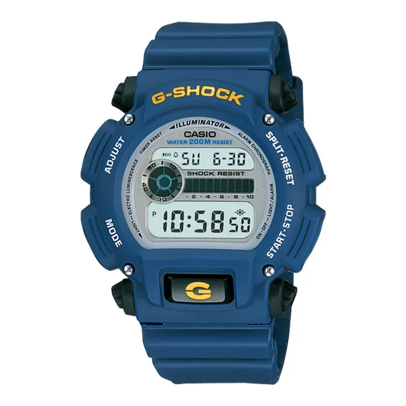

Rp 1.129.000
Seri G-Shock DW-9052 dikenal sebagai model tangguh yang dirancang untuk penggunaan outdoor, militer, dan aktivitas berat. Versi warna biru ini hadir dengan desain kokoh, tombol lampu besar, dan ketahanan shock khas G-Shock.
| Model No. | DW-9052-2VDR |
|---|---|
| Case Size | 48.5 × 43 × 14.7 mm |
| Weight | 59 g |
| Case & Bezel | Resin |
| Band | Resin |
| Glass | Mineral Glass |
| Water Resistance | 200 m |
| Movement | Quartz |
| Functions | Shock Resistant, Stopwatch, Countdown Timer, Multi-Alarm, EL Backlight |